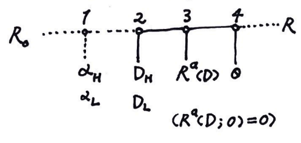

一个股利信号模型
来尝试做一个可以解释正向 / 反向股利信号的模型。我这里叫正向指的是公告发放股利后，公司股价上升的情况，即投资者认为是公司盈利好、富裕现金多的信号；反向信号即公告后股价下跌。
模型的设定如下：

我们纳入代理问题的考量。存在投资者（外部股权）和内部代理人（经理，可能持有股份）两方，公司正在经营一个新项目。这里关键的假设有：风险中性（贝叶斯均衡）；风险项目的产出简化为两点分布，以一定概率 \(\alpha\) 获得现值 \(R\)，\(1-\alpha\) 概率亏空为 \(0\)；私人收益线性函数（见下）。
当下第一期实现了收入 \(R_0\)，但之后仍然存在风险：好项目获得 \(R\) 的概率为 \(\alpha_H - \tau \theta\)（\(0\) 的概率为 \(1-\alpha_H+ \tau \theta\)），坏项目获得 \(R\) 的概率为 \(\alpha_L - \tau \theta\)，且 \(\alpha_H > \alpha_L\)。其中 \(\theta\) 为经理的偷懒程度，\(\theta \in [0,1]\)，\(\theta = 0\) 为认真工作；\(\tau\) 表示了偷懒对项目经营的危险程度。
这里的信息不对称表现为外部投资者不清楚 \(\alpha\) 并赋以 \(\alpha_H\) 概率 \(\gamma\)（\(\alpha_L\) 概率 \(1-\gamma\)），而经理知道自己是 \(\alpha_H\) 还是 \(\alpha_L\)。经理决定股利分配政策，实施发放股利 \(D\)，为市场所观测。之后由董事会（投资者控制）决定经理报酬方案 \(R^a\)（根据信号 \(D\) 和未来项目收入 \(R\) 获得报酬，即 \(R^a(D,R)\) 且默认失败没有补偿 \(R^a(D,0) = 0\)）。最后项目执行，经理选择 \(\theta\) 并最终依概率得到 \(R\) 或 \(0\)。（流程可见上图）
当一部分当期收入作为股利时，另一部分留存收益 \(R-D\) 将进行再投资，这会提高未来的产出。我们假设如果项目成功的话，现值
\[
R = \frac{R_0}{\mu} + \beta (R-D)(1-w\theta)
\]
其中 \(\mu\) 为折现率，通常 \(\mu = WACC\)；\(\beta\) 为总投资回报率，通常 \(\beta = \frac{ROIC}{WACC} > 1\)（公司有盈利能力）。\(w\theta (R-D)\) 为代理成本（与留存收益成正比），\(w\) 代表了代理问题的严重性（挪用现金比例上限）。
经理的效用函数为
\[
U_a=\eta D+(\alpha-\tau \theta) R^a(D)+ \left(w\left(R_0-D\right)+R_w\right) \theta
\]
其中 \(\eta\) 为经理原持股比例，得到分红的一部分。私人收益函数 \(w(R_0-D)+R_w\)，常数项 \(R_w\) 是怠工本身（如休闲）带来的效用。注意第二项为未来项目带来的薪酬预期（失败为 \(0\)）。
投资者的效用函数为
\[
U_{i}=(1-\eta) D+(\alpha-\tau \theta)\left(\frac{R_0}{\mu}+\beta\left(R_0-D\right)(1-\omega \theta)-R^a(D)\right)
\]
以上 \(R_0, \mu, \alpha_{H/L}, \beta_{H/L}, w, R_w, \tau, \eta, \gamma\) 均为共同知识。我们这里假设了很多线性形式，可以料到最值会处在两极。
先来看最后一步，我们认为经理不会怠工。这个激励合约需要满足的条件：
\[\begin{split}
\begin{aligned}
& \text { Step 4. } U_a=\left(w R_0+R_w-w D-\tau R^a\right) \theta+\alpha R^a+\eta D \\
& \max U_{a} \Rightarrow R^a(D) \geqslant \frac{w}{\tau}\left(R_0-D\right)+\frac{R_w}{\tau}, \theta=0 \\
& (\alpha-\tau)\left(\frac{R_0}{\mu}+\beta\left(R_0-D\right)(1-w)\right) \leqslant \alpha\left(\frac{R_0}{\mu}+\beta\left(R_0-D\right)-\frac{w\left(R_0-D\right)+R_w}{\tau}\right) \\
& \text { loose } \alpha w \leqslant \tau^2\left(\frac{1}{\mu}+\beta\right)
\end{aligned}
\end{split}\]
最后的不等式条件说明怠工成本应比较大或项目价值足够大。
考虑混同均衡：
\[\begin{split}
\begin{aligned}
& \text{ Pooling Equilibrium: }D_H=D_L=D \\
& \max U_{i} \Rightarrow R^a(D)=\frac{w\left(R_0-D\right)+R_{w}}{\tau} \\
& \text { Step 2. } U_a=\eta D+\frac{\alpha \omega}{\tau}\left(R_0-D\right)+\frac{\alpha R_w}{\tau}+R_w+w\left(R_0-D\right) \\
& =\left(\eta-\frac{\alpha+\tau}{\tau} w\right) D+\left(w R_0+R_{w}\right) \frac{\alpha+\tau}{\tau} \\
& \Rightarrow D=R_0 \text { or } 0\\
\end{aligned}
\end{split}\]
（若持股比较大则 \(D=R_0\)，反之为 \(0\)）
我们希望现实中的信号情形为分离均衡。但由于 \(R^a(D,R)\) 函数未定，均衡数量恐怕不少。考虑一种常见的方式——股权激励 \(R^a = \eta' R\)，\(\eta'_{H/L}\) 为未来允诺的持股比例。
在混同均衡下，有
\[\begin{split}
\begin{aligned}
& R^a(D)=\eta^{\prime}\left(R_0\left(\frac{1}{\mu}+\beta\right)-\beta D\right) \\
& \text{then } D=R_0, \eta_H^{\prime} = \frac{R_w \mu}{R_0 \tau} \text{ or } D=0, \eta_L^{\prime} = \eta_H^{\prime} + \mu(\frac{w}{\tau} - \beta_L)
\end{aligned}
\end{split}\]
而分离均衡的出现要求
\[\begin{split}
\begin{aligned}
& \text{ Separating Equilibrium: } \\
& \text { Step 2. } U_a=\alpha R^a(D)+\eta D \\
& \qquad\quad =\left(\eta-\eta^{\prime} \alpha \beta\right) D+\eta^{\prime} \alpha R_0\left(\frac{1}{\mu}+\beta\right) \\
& \Rightarrow \left(\eta^{\prime} \alpha \beta\right)_L>\eta>\left(\eta^{\prime} \alpha \beta\right)_H \text{ or } \left(\eta^{\prime} \alpha \beta\right)_H>\eta>\left(\eta^{\prime} \alpha \beta\right)_L \\
& \text{ corresponding to }\left\{\begin{array} { l }
{ D _ { H } = R _ { 0 } } \\
{ D _ { L } = 0 }
\end{array} \text{ or } \left\{\begin{array}{l}
D_H=0 \\
D_L=R_0
\end{array}\right.\right. \\
&
\end{aligned}
\end{split}\]
简便起见，我们令 \(\beta_L = \frac{w}{\tau}\) 即最低工资，这样 \(\eta'_H = \eta'_L = \eta\)，持股比例不变。两种情况（正向 / 反向）对应 \(\alpha_L \beta_L>1>\alpha_H \beta_H \ / \ \alpha_L \beta_L<1<\alpha_H \beta_H\)。
我们假设投入好项目的总值一定胜过投入坏项目，即 \(\alpha_L R_0\left(\frac{1}{\mu}+\beta_L\right)<\alpha_H R_0\left(\frac{1}{\mu}+\beta_H\right)\)。但边际产出 \(\alpha_H \beta_H\) 与 \(\alpha_L \beta_L\) 关系并不明确——对于成熟的项目和公司，\(\alpha_L \beta_L > \alpha_H \beta_H\)；而对于新兴领域的项目和公司，\(\alpha_H \beta_H > \alpha_L \beta_L\)，好项目机会急需资金扩张。
于是我们看到，正向和反向的股利信号都有可能出现。
考虑股利发放公告公布前公司的股权市值：
\[\begin{split}
\begin{aligned}
V_0 & = \gamma\left(D_H+\alpha_H\left(\frac{R_0}{\mu}+\beta R_0-\beta D_H\right)\right) \\
& \quad +(1-\gamma)\left(D_L+\alpha_L\left(\frac{R_0}{\mu}+\beta R_0-\beta D_L\right)\right) \\
& = \gamma V_H+(1-\gamma) V_L
\end{aligned}
\end{split}\]
公告后市值 \(D_H \rightarrow V_H\) 或 \(D_L \rightarrow V_L\)。
结合前面的系数条件，我们不难得到总是有 \(V_H > V_0 > V_L\)。
反向股利信号真的存在吗？微软自1986年IPO后，迅速成长，很多年采取零股利政策。2003年，微软第一次宣布派发现金股利，公司股价却一度下跌。